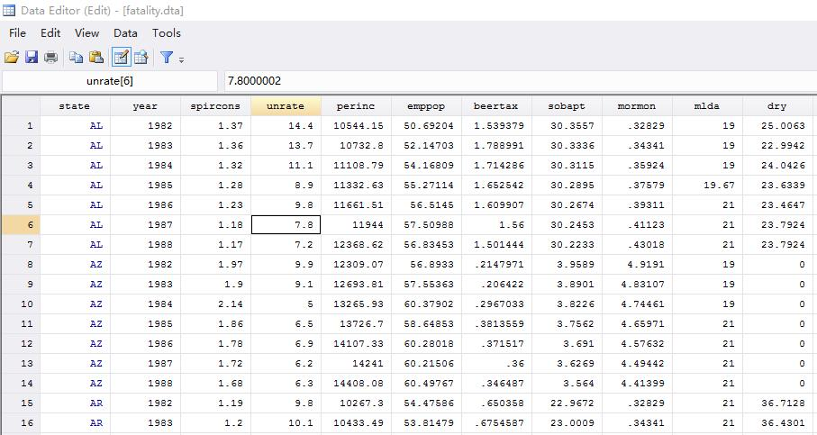
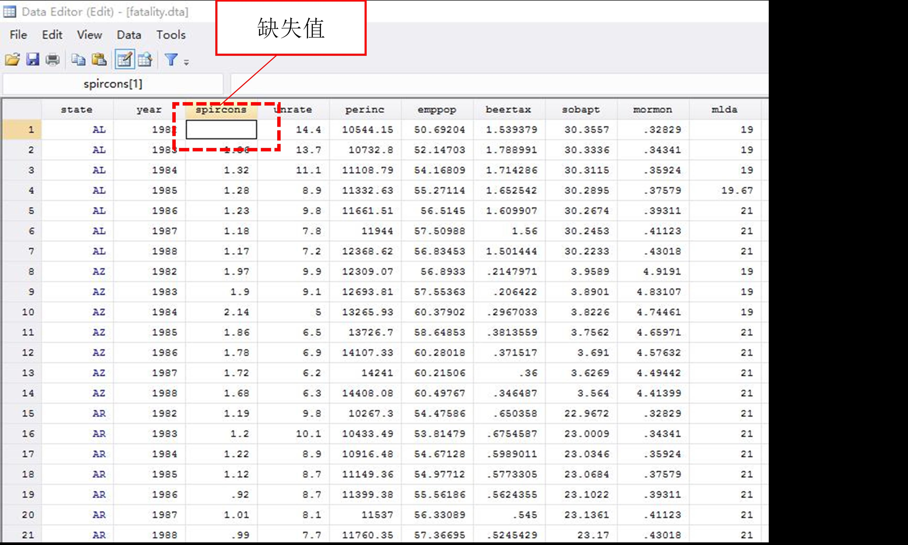
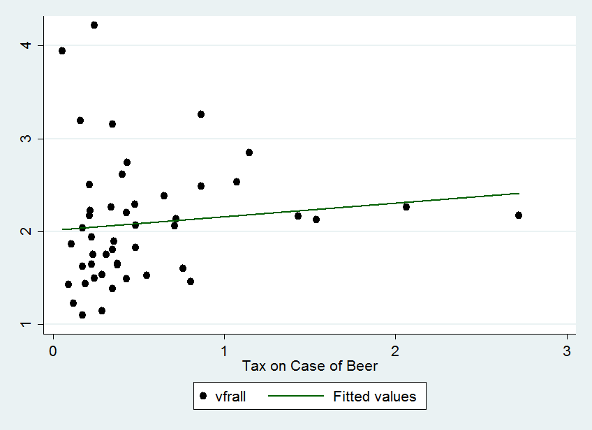
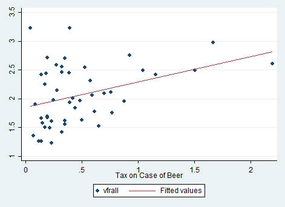
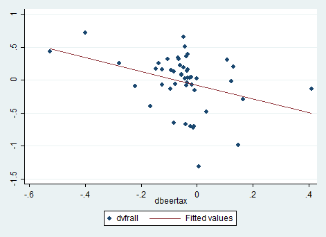

面板数据模型
正如第五讲所述，一项经验研究可能存在的主要问题：遗漏变量偏误、变量测量误差、反向因果、模型设定错误、样本选择偏误、异方差和序列相关。第四讲呈现的多元回归方法可以消除某些遗漏变量偏误。但多元回归只能应对遗漏变量的数据可用的情形。如果遗漏变量的数据不可用，那么，多元回归中就不能包含它们，此时，OLS估计系数就可能存在遗漏变量偏误。在特定的数据类型（面板数据）下，本讲呈现了一种方法来降低不可观测的遗漏变量偏误。
线性回归和匹配方法非常适合于控制非随机/观测数据中的混淆因子，但是它们依赖于一个核心假设：条件无混淆性
\[(Y_0, Y_1) \perp T | X\]
换言之，这些方法要求所有的混淆因子都是已知的，或是可测度的，基于此，我们可以基于这些可观测混淆因子，并认为处理近似随机。但实践中，我们并不能观测到所有的混淆因子。例如，婚姻对男人收入的影响。在经济学中，大家通常会观测到，已婚男性相较于单身男赚取更多的收入。但是我们并不清楚结婚是不是男人收入的原因（也就是说，这个关系是否是因果关系）。我本人在结婚前年收入10万左右，那个时候一个人吃饱全家不饿，还完8万房贷，每年还有2-3万存款，觉得生活无忧。但结婚后，我的收入每年增长较快，现在应该算是中高收入人群了吧。但是我自己是博士呀，我在气候变化宏观经济学、DSGE和DID领域做得还算可以，老师嘛，越来越吃香。所以我很怀疑，结婚促使我的收入增长。也可能是在武大认识很久了让我们结婚可能性更大，且赚取了更高的收入。这就意味着，教育可能是婚姻对收入因果效应的混淆因子。
对此，我们可以测度出我们从幼儿园到博士读了多少年书，然后在回归中控制它。但是，也有可能是因为“漂亮”（这个topic在经济学中有很多研究，例如，Hale G, Regev T, Rubinstein Y. Do looks matter for an academic career in economics?[J]. Journal of Economic Behavior & Organization, 2023, 215: 406-420. Chen Q, Wang X, Zhao Q. Appearance discrimination in grading?− Evidence from migrant schools in China[J]. Economics Letters, 2019, 181: 116-119.）也就是说，长得更帅气的男人更可能结婚，并赚取得更多。可惜，漂亮不可观测，每个人的标准不一样。
这让我们陷入困境，如果我们遗漏了漂亮这个混淆因子，回归肯定是有偏的。
下面，我们以“醉驾”问题为例，来说明面板数据模型的原理与实际操作。使用的数据是美国48个州，1982-1988年的交通事故（traffic fatalities）、酒精税（alcohol taxes）、醉驾法律（drunk driving laws）以及其他相关变量。
面板数据
我们在第一讲中提到过面板数据的类型。在面板数据中，有n个观测单元/个体，每个观测个体有两期及多期观测值。
在计量经济学中通常用\(X_{it}\)来表示面板数据，其中下标i表示观测个体，下标t表示观测时间。本讲使用的美国交通事故数据就是面板数据，它包含美国的48个州（n=48），每个州有7年的观测值（T=7），共\(48\times7=336\)个样本。
与面板数据相关的两个重要概念：
（1）平衡面板，即样本中每一个个体，每一时期均有观测值，如图1所示；

（2）非平衡面板，即面板中至少有一个时期、一个个体的观测值是缺失的，如图2所示。

在美国，每年将近40000高速交通事故，其中近1/4与醉驾有关。Levitt and Porter（2001）估计在凌晨1点-3点开车的司机中，且达到法定饮酒年龄的，有25%的司机饮酒后开车上路，他们造成的交通事故至少是没有饮酒的司机的13倍。（注：中国这一情况也非常严重。2009年全国查处酒后驾驶案件31.3万起，其中醉酒驾驶4.2万起。2010年，全国查处醉驾达8.7万起。 2009年1-8月，共发生3206起，造成1302人死亡，其中，酒后驾车肇事2162起，造成893人死亡；醉酒驾车肇事1044起，造成409人死亡。）
下面，我们来看看美国政府实施的抑制醉驾行为的政策到底有多大效果。我们所使用的数据中包含：每年每个州的交通事故数和防止酒驾的政策（包括酒驾法律、酒精税）。交通死亡指标使用死亡率（vfrall）——每万人年交通死亡人数。政策指标是酒精帅，使用啤酒税（BeerTax），且经过1988年通胀处理的实际啤酒税。
图3呈现了1982年交通死亡率与酒精税之间的散点图和拟合线。散点图上的每一个点都代表着1982年给定税率下的死亡率。从图中，可以看出死亡率与税率正相关。回归结果如下
\[\begin{equation} vfrall=2.01+0.15BeerTax（1982年） \end{equation}\]
回归结果显示，酒精税的系数为0.15，t统计量为1.12。也就是说，实际酒精税对死亡率的效应为正，但是在10%的水平下不显著。

从散点图和回归结果来看，这个结果似乎有点奇怪。那么，我们再来看看1988年的结果。其散点图和趋势线如图4所示。回归方程如下 \[\begin{equation} vfrall=1.86+0.44BeerTax（1988年） \end{equation}\]
1988年回归结果显示，酒精税的系数为0.44，且t统计量为3.43，也就是说酒精税对死亡率的效应在1%的水平下显著为正。

虽然，1982年和1988年的估计结果有所差异，但是酒精税的系数均为正。从字面来理解，实际酒精税越高，交通死亡率越高。这似乎与政策设计初衷相悖，也与常识相悖。那么，我们能得出结论：提高酒精税会增加死亡率？
答案显然是否定的！因为上述两个回归结果可能存在很大的遗漏变量偏误。还有许多影响交通死亡率，但又未包含在回归中的因素：汽车质量；公路质量；在农村开车还是在城市；道路上车流密度；对待饮酒和开车的态度等等。这些因素都可能与酒精税有关。如果它们与酒精税相关，就会导致回归结果存在遗漏变量偏误。第四讲为我们提供了一种解决有观测数据的遗漏变量问题的方法——加入其它解释变量（控制变量）。但是，上述有些因素是不可观测的——例如，对饮酒和开车的态度，那怎么办？
如果这些不可观测的遗漏变量不随时间变化，那么，我们可以使用另一种方法来降低遗漏变量偏误。这种方法就是固定效应模型。
固定效应回归
两期“比较”
在前面的回归中，我们分别对1982年和1988年的截面数据进行回归。那么，我们现在将两年数据结合在一起，形成一个两期的面板数据（n=48，T=2）。这样我们就可以将1988年的被解释变量（死亡率）与1982年进行比较。也就是说，在不可观测因素恒定（在时间维度不变，在个体维度可变）时，我们关注于被解释变量“前”“后”变化。
用\(Z_i\)表示影响第i个州的交通死亡率的因素，它不随时间变化，因此没有时间下标。那么，这个包含不可观测因素的两期面板数据总体回归线为 \[\begin{equation} vfrall_{it}=\beta_{0}+\beta_{1}BeerTax_{it}+\beta_{2}Z_i+u_{it} \end{equation}\] 其中，\(u_{it}\)表示随机误差项，n=1，⋯⋯，48；T=1982,1988。
因为\(Z_i\)不随时间变化，也就是说，它在1982年和1988年是一样的。那么，在上述回归方程（3）中，我们可以通过分析1982年-1988年死亡率的变化来消除\(Z_i\)的影响。从数学形式来看，1982年和1988年的回归方程分别为： \[\begin{equation} vfrall_{i1982}=\beta_{0}+\beta_{1}BeerTax_{i1982}+\beta_{2}Z_i+u_{i1982} \end{equation}\] \[\begin{equation} vfrall_{i1988}=\beta_{0}+\beta_{1}BeerTax_{i1988}+\beta_{2}Z_i+u_{i1988} \end{equation}\]
然后，我们将（5）式减去（4）式来消除\(Z_i\)的影响： \[\begin{equation} vfrall_{i1988}-vfrall_{i1982}=\beta_{1}(BeerTax_{i1988}-BeerTax_{i1982})+(u_{i1988}-u_{i1982}) \end{equation}\]
从（6）式中可以很直观的看出：不可观测因素虽然影响一个州的死亡率，但是它不会在1982年和1988年间变动，因此，它们也不会对这个期间的死亡率变化产生任何影响。
也就说，通过分析被解释变量Y与解释变量X的变化量可以消除不随时间变化的不可观测因素，从而消除这种来源的遗漏变量偏误。
图5呈现了1982-1988两年的散点图和拟合线。图中，dvfrall是1988年vfrall与1982年之差，dbeertax同理。

回归方程为 \[\begin{equation} vfrall_{i1988}-vfrall_{i1982}=-0.072-1.04(BeerTax_{i1988}-BeerTax_{i1982}) \end{equation}\]
回归系数为-1.04，且t统计量为-2.93，在1%的水平显著。与第一节的截面数据结果相比，上述回归结果显示实际酒精税对死亡率有显著地负向影响，也符合经济理论。
上述回归只对包含两期的面板数据可用。而我们所使用的数据集包含7年长度。
固定效应回归
为了消除不随时间变化的不可观测因素带来的影响，可使用固定效应回归。在这种情形下，固定效应回归有n个截距，每个州都有一个。这些截距可以用一个指示变量（二值变量）来表示。而所有不随时间变化的遗漏变量影响都会被这些指示变量吸收。
我们用Y和X来分别表示死亡率和酒精税。那么，我们可以将（3）式写成 \[\begin{equation} Y_{it}=\beta_{0}+\beta_{1}X_{it}+\beta_{2}Z_i+u_{it} \end{equation}\]
我们的目的就是估计出\(\beta_1\)，即酒精税对交通死亡率的影响，且控制不可观测的地区特征\(Z_i\)。因为\(Z_i\)只在各州之间变化，而不随时间变化，因此，我们可以令\(\alpha_i=\beta_0+\beta_{2}Z_i\)。因此，（8）式可以写成： \[\begin{equation} Y_{it}=\beta_{1}X_{it}+\alpha_i+u_{it} \end{equation}\]
（9）式就是固定效应模型。需要注意的是，上述总体回归线的斜率对于每个州都是相同的，但是每个州又对应着不同的截距。因为\(\alpha_i\)考虑的是个体i的效应，因此，它也被称为个体固定效应。
我们回忆一下二值变量（虚拟变量），上述固定效应回归也可以用二值虚拟变量来表示，例如，如果i=1，令\(D_{1i}=1\)，否则为0；如果i=2，令\(D_{2i}=1\)，否则为0；等等。由于有48 个州，因此，设置48个虚拟变量。但是为了避免虚拟变量陷阱（即完全多重共线性），我们要删除一个虚拟变量（任意删除即可）。因此，（9）式可变形为： \[\begin{equation} Y_{it}=\beta_{0}+\beta_{1}X_{it}+\gamma_2D_{2i}+\cdots+\gamma_nD_{ni}+u_{it} \end{equation}\]
由（10）式可知，\(\beta_0,\beta_1,\gamma_2,\cdots,\gamma_n\)是待估计系数。现在，我们来对比一下（9）式和（10）式：（9）式中，第一个地区的截距为\(\alpha_1\)，在（10）式中，第一个地区的截距为\(\beta_{0}\)，因此，\(\alpha_1=\beta_{0}\)，以此类推第二个第三个等等地区的截距为\(\alpha_i=\beta_0+\gamma_i\)。也就是说，（9）和（10）是等价的，固定效应模型有两种表达方式。而在这两种表达式中，所有地区的斜率都是一样的，个体固定效应来源于不随时间可变的不可观测地区异质性。
大家可能意识到，上述固定效应模型并没有包含可观测的控制变量。包含其他解释变量的模型同第四讲的多元回归。下面，我们继续讲解固定效应模型的估计和推断。
I. 估计和推断
（9）式中存在不可观测因素\(\alpha_i\)，因此，不能直接使用OLS。而（10）从理论上讲可以直接使用OLS估计，但是由于其有k+n个参数（k个解释变量的系数，n-1个虚拟变量系数和一个常数项），因此，一旦个体数量非常大，在实践中是很难实施OLS估计（在软件中输入k+n个变量）。幸好，现在有了Stata，它直接可以替我们跑出回归结果。下面，我们稍微看看stata在估计固定效应模型时的工作原理。
个体去均值算法：stata一般会执行两步：
第一步，每个变量减去其个体层面的均值。
例如，在（9）式中，被解释变量Y的个体层面均值为\(\overline{Y_i}=\frac{1}{T}\sum_{t=1}^{T}Y_{it}\)，解释变量X也同理。然后，用Y减去均值，\(Y_{it}-\overline{Y_i}\)，X和u也同上。因此，可以得到 \[\begin{equation} \tilde{Y}_{it}=\beta_{1}\tilde{X}_{it}+\tilde{u}_{it} \end{equation}\]
第二步,估计上述去均值回归方程。
我们还是利用美国48个州的交通死亡率和酒精税数据来看看上述固定效应回归结果： \[\begin{equation} \tilde{vfrall}_{it}=-0.66\tilde{BeerTax}_{it}（去均值结果） \end{equation}\]
\[\begin{equation} vfrall_{it}=-0.66BeerTax_{it}+\alpha_i \end{equation}\]
上文我们提到过，上述个体固定效应模型也遗漏了一些变量，除了可观测的变量之外，还有一个重要的遗漏变量就是不可观测的不随地区变化的因素。
II. 时间固定效应
类似于个体固定效应，时间固定效应是不随个体变，而随时间变化的因素。我们用\(S_t\)表示，那么，只包含时间固定效应的模型为 \[\begin{equation} Y_{it}=\beta_{0}+\beta_{1}X_{it}+\beta_{3}S_t+u_{it} \end{equation}\]
与上述个体固定效应同理，由于\(S_t\)不随地区变化，只随时间变化，因此，令\(\lambda_t=\beta_{0}+\beta_{3}S_t\)。那么，（14）式可以变为 \[\begin{equation} Y_{it}=\beta_{1}X_{it}+\lambda_t+u_{it} \end{equation}\]
同理，每一个时期都有一个截距，截距\(\lambda_t\)就是时间t对被解释变量Y的效应，也被称为时间固定效应。
同样的，时间固定效应模型也有两种表达方式：一种是时间虚拟变量；另一种是（15）式。 \[\begin{equation} vfrall_{it}=-0.02BeerTax_{it}+\lambda_t \end{equation}\] 加入时间固定效应之后，上述回归结果并不显著。
下面，我们来看看同时加入个体固定效应和时间固定效应的模型： \[\begin{equation} Y_{it}=\beta_{1}X_{it}+\alpha_i+\lambda_t+u_{it} \end{equation}\]
与个体固定效应的算法相同，时间固定效应和双向固定效应的算法也可以采用“去均值算法”。
首先，Y和X分别减去其个体层面均值和时间层面均值；
然后，用两次差分之后的去均值变量进行回归，用OLS估计系数。
另一种方式，就是我们常用的Y和X只减去个体层面的均值，然后设立时间虚拟变量，用fe命令进行回归。用这种方式得到的回归结果为 \[\begin{equation} Y_{it}=-0.64X_{it}+\alpha_i+\lambda_t+u_{it} \end{equation}\] 回归结果在10%的水平下显著。
注：一般来讲，面板数据都需要控制个体固定效应和时间固定效应，因为这可以消除不可观测的随时间可变不随个体变化的因素或者不随个体变化随时间变化的因素所引起的遗漏变量偏误。在使用家庭（企业）层面、省（市县）层面的数据后，还要同时控制家庭固定效应、省固定效应和时间固定效应。
III. 聚类标准误
在面板数据模型中，我们假设个体之间是独立的，但是在个体层面内部，由于存在不同时间的观测值，因此它们不一定独立。这就可能存在个体内部的自相关或者序列相关问题。这就意味着误差项u可能也存在自相关问题。此时，截面数据回归的异方差稳健标准误就不再有效。为了消除面板数据回归中误差项自相关问题，我们要使用异方差-自相关一致性（HAC）标准误，也就是聚类标准误。我们上述的回归结果都是使用的聚类标准误。
注：在面板数据回归中，一定要使用“聚类标准误”，也就是个体层面的聚类
例子